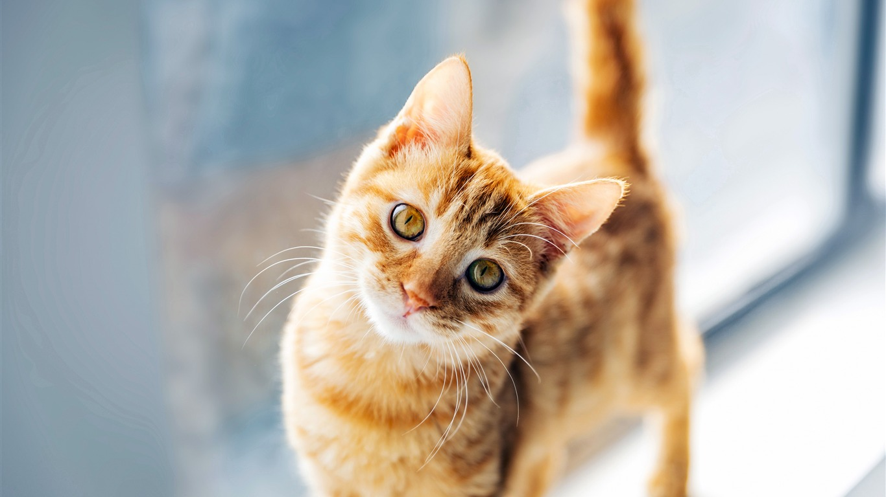

그룹명인 TWICE는 눈으로 한 번, 귀로 한 번 감동을 준다는 의미로 박진영이 SIXTEEN을 진행하는 동안 지은 이름이다.
브랜드 네이미스트 박재현은 마이 리틀 텔레비전 방송에서 근래 데뷔한 아이돌 중 가장 좋은 팀명이라고 평가했다.
발음적으로 강한 소리가 있어 인식하기 쉽고, 유명한 단어지만 익숙하지는 않아서 신선함을 갖췄다는 평.
애칭은 '트둥이'로, TWICE와 막둥이의 합성어이다.[6] 데뷔 당시 JYP의 막내 그룹이라는 의미로 붙은 애칭이다.